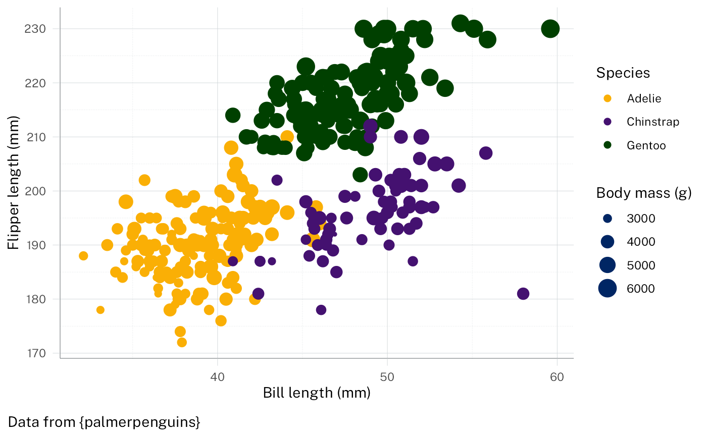

A 'ggplot2' theme compatible with the NSW design system. It sets default colour scales, fonts, and some other styles.
Usage
theme_nsw(
base_size = 11,
base_family = "Public Sans",
header_family = "Public Sans",
base_line_size = base_size/22,
base_rect_size = base_size/22,
ink = "black",
paper = "white",
geom_ink = "blue_01",
accent = "blue_02",
variant = getOption("nswtheme.colour_theme", default = "base"),
show_grid_lines = TRUE,
void = FALSE
)Arguments
- base_size
base font size, given in pts.
- base_family
base font family
- header_family
font family for titles and headers. The default,
NULL, uses theme inheritance to set the font. This setting affects axis titles, legend titles, the plot title and tag text.- base_line_size
base size for line elements
- base_rect_size
base size for rect elements
- ink, paper, accent
colour for foreground, background, and accented elements respectively.
- geom_ink
default ink colour used by geoms for points, lines and fills.
- variant
name of palette variant. Available options are: base, aboriginal, corporate, treasury.
- show_grid_lines
whether to show grid lines. If
FALSE, all grid lines are removed but the axis text is retained. Ignored whenvoidisTRUE.- void
whether to hide grid lines and axes. If
TRUE, all grid lines and axes are removed. This is useful when creating pie/donut charts.
Examples
library(ggplot2)
set_theme(theme_nsw())
ggplot(palmerpenguins::penguins) +
geom_point(aes(
x = bill_length_mm,
y = flipper_length_mm,
colour = species,
size = body_mass_g
)) +
labs(
caption = "Data from {palmerpenguins}",
dictionary = c(
bill_length_mm = "Bill length (mm)",
flipper_length_mm = "Flipper length (mm)",
species = "Species",
body_mass_g = "Body mass (g)"
)
)
#> Warning: Removed 2 rows containing missing values or values outside the scale range
#> (`geom_point()`).
